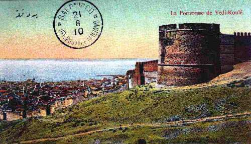

Tο Επταπύργιο Θεσσαλονίκης
 Στο βόρειο τμήμα της Ακρόπολης της Θεσσαλονίκης βρίσκεται φρουριακό συγκρότημα από επτά πύργους, το Επταπύργιο, ή αλλιώς "Γεντί Κουλέ" (γνωστό από πολλά ρεμπέτικα τραγούδια). Ο κεντρικός του πύργος, όπως αναγράφεται σε εντοιχισμένη επιγραφή, κατασκευάστηκε από τον Τσαούς μπέη το 1431. Το Επταπύργιο αποτελούσε την έδρα του διοικητικού μηχανισμού της πόλης και τελευταία γραμμή της άμυνάς της. Από το τέλος του 19ου αι. μετατράπηκε σε φρούριο-φυλακή, τη μακροβιότερη και ίσως την πιο συζητημένη φυλακή της χώρας. Πολιτικοί κυρίως κρατούμενοι που διετέλεσαν έγκλειστοι στο Επταπύργιο δημοσιοποίησαν τις βάρβαρες συνθήκες εγκλεισμού και ευαισθητοποίησαν την κοινή γνώμη, γεγονός που οδήγησε στο κλείσιμο των φυλακών το 1989. | ||